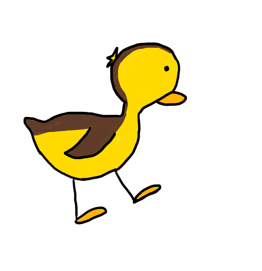

Ich habe ein Kinderbuch gemacht
Meine Ideen, der Prozess und mehr
25.07.2021
"Frieda will kein Schaf mehr sein" heißt mein Kinderbuch, das ich selbst geschrieben und illustriert habe. Jetzt nicht im Buchhandel erhältlich, sondern einfach nur mein eigenes Projekt in limitierter Auflage gedruckt, weil ich Spaß daran hatte. In diesem Blogeintrag zeige ich euch meinen Prozess und die Zwischenschritte bis zum fertigen Buch in der Hand.
Über das Buch:
Frieda will kein Schaf mehr sein. Also beschließt sie, etwas anderes zu sein. Aber das ist gar nicht so einfach… Eine Geschichte von Anna Schierholz - mit Niedlichkeitsgarantie!
Idee & Geschichte
Worüber schreibe ich denn jetzt?"Wie sieht es aus, wenn ein Schaf so watschelt wie eine Ente?", dachte ich. Wer mich kennt, weiß, dass das für mich kein so ungewöhnlicher Gedanke ist. Der Gedanke ließ mich allerdings nicht los und ich fragte mich, wie ein Schaf ein anderes Tier sein könnte - eine Ziege zum Beispiel. Mit der Idee im Hinterkopf startete ich einen Skillshare Kurs mit dem Titel "Picture Books I: Write your story". Von da aus nahm die Geschichte ihren Lauf und ich erstellte einen ersten Dummy, um meine Worte immer wieder auf die "Ich-möchte-Umblättern"-Spannung und ihre Lesbarkeit zu überprüfen. Ende August 2020 stand ich dann mit einem Kinderbuch-Manuskript da. "Das zu illustrieren wäre schon cool…", dachte ich, "aber auch echt viel Arbeit". Also blieb der Text erstmal in der Schublade liegen.
Illustration und Gestaltung
Mit dem Zeichnen fing ich im März 2020 an. Wir waren alle im Lockdown und ich hatte mir zu meinem neuen Laptop ein günstiges Grafiktablet gekauft, mit dem ich für das Studium Notizen machen konnte und mich vielleicht in einfacher Animation ausprobieren konnte. Was folgte sind einige kleine GIFs und im September dieser Blog, für den ich kleine Bilder für die Einträge zeichne. Das digitales Zeichnen machte es schon um einiges einfacher loszulegen, weil man immer wieder Strg+Z drücken kann und sich an Referenzlinien etc. orientieren kann. Mit der Zeit habe ich also etwas Erfahrung gesammelt und auch schon mehrmals Entenbabys gemalt. Die eigentliche Motivation wieder mein Kinderbuch-Projekt anzufangen kam dann durch eine Sammlung an Pixibüchern, die ich in der Drogerie fand und Inspirationen für meine eigenen Zeichnungen fand. Dazu schaute ich Folgekurs auf Skillshare "Picture Books II: Illustrate a Story" von Christine Nishiyama. Dazu machte ich ein weiteren Dummy mit (sehr groben) Zeichnungen. Auch ein bisschen was zu Farbentheorie lernte ich mir an und schaute nach Referenzbildern und erstellte eine erste Zeichnung von Frieda. "Ja, das wird viel Arbeit", dachte ich mir, "aber es bringt gerade zu viel Spaß, um aufzuhören".
April 2021
Im April nahm ich mir dann die Challenge vor: Ich würde jeden Tag mindestens eine halbe Stunde lang an Illustrationen für mein Kinderbuch arbeiten und das für 100 Tage. Kein konkreter Plan, wann ich mit welcher Seite fertig sein wollte, sondern nur ein Ziel für den Input: Eine halbe Stunde am Tag. Und es hat gewirkt. Auch wenn ich nach den ersten 40 Tagen immer mal wieder einen Tag verpasst habe, bin ich gut vorangekommen und die Ergebnisse haben mich immer motiviert weiter zu machen. Was soll man auch machen, wenn ein Entchen so niedlich hinter dem Zaun hervorguckt?
Entwurf Emil
Gegen Ende musste ich mir dann Gedanken über die Gestaltung machen. Ich war zwischendurch sehr überzeugt, auch eine eigene Schriftart machen zu wollen. Letztendlich habe ich diese aber nur für einige Wörter benutzt, weil man da echt lange braucht, um das Schriftbild wirklich für alles richtig hinzubekommen. Nach vielem Ausprobieren entschied ich mich dann für Gnaramops, eine frei verfügbare Schriftart von Markus Spang, die extra für Kinderbücher gemacht wurde. Danach ging es ans Verschieben und letzte Feinschliffe und tadaaaa - mein Kinderbuch war fertig! Im Juni 2021 schickte ich das Buch ab zu epubli, wo man sehr einfach privat Bücher drucken kann (und auch veröffentlichen kann, wenn man möchte) und konnte es zwölf lange Tage später in den Händen halten! Mein eigenes, selbst geschriebenes und illustriertes Kinderbuch!
Drei Dummys und etliche Arbeitsstunden später ist es nun da: Mein eigenes Kinderbuch. Den Punkt "ein eigenes Buch schreiben" kann ich also von meiner Bucket-List schon mal streichen. Ob ich dann nicht eigentlich etwas anderes studieren hätte sollen? Oder was will ich damit in der Zukunft machen? Gibt es jetzt jedes Jahr ein neues Kinderbuch von dir? Für mich ist der Kinderbuch-Machen nur ein Hobby, was mir total viel Spaß und Freude bereitet. Sonst hätte ich mir die Arbeit ja auch gar nicht gemacht. Und nein, ich bereue es auch überhaupt nicht Informatik zu studieren, weil auch das mit total viel Spaß macht. Man muss eben auch nicht alles, was einem Spaß macht zum Beruf machen. Falls ich aber doch mal ein Kinderbuch veröffentliche, dürft ihr euch aber auch nicht wundern. ;)